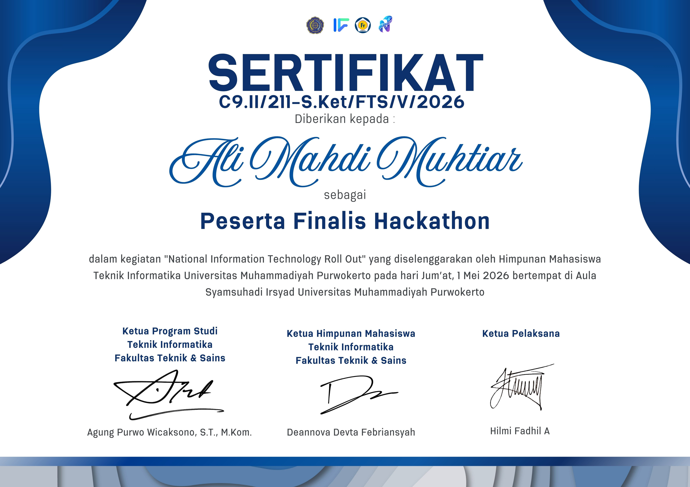
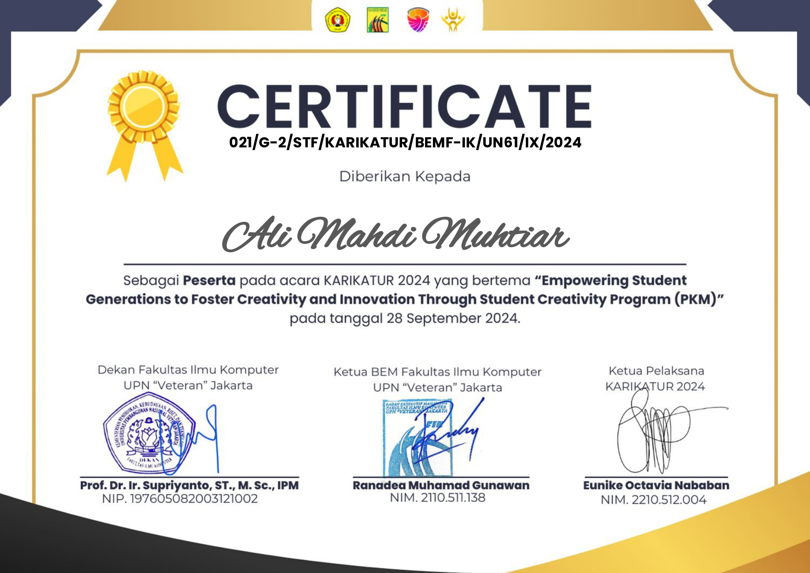
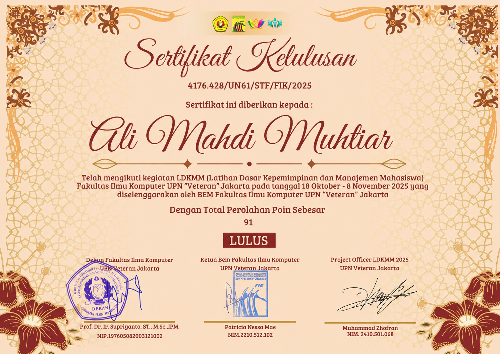

Hi, I'm Ali Mahdi Muhtiar
I'm an Aspiring IT Auditor, a QA Engineer, & an IT Business Analyst
Hi, I’m an Information Systems student at UPN Veteran Jakarta (GPA 3.89) passionate about bridging technology, governance, and business processes. With experience as a Top 10 Finalist in the NITRO Hackathon 2026, I focus on IT Auditing, Quality Assurance, and IT Business Analysis. I’m driven by critical thinking, analytical problem-solving, and a commitment to operational efficiency. Always open to opportunities, internships, and collaborative tech projects.
Hire me
My Services
IT Auditor
Evaluating and strengthening IT controls, compliance (ISO 27002 & ITIL V4), and risk management to ensure system security and governance.
QA Engineer
Ensuring software reliability through functional testing, bug tracking, and quality assurance processes to deliver seamless user experiences.
IT Business Analyst
Bridging business needs and technology by analyzing processes, gathering requirements, and delivering actionable insights for optimal solutions..
Technical Skills
Hard Skills
- Bahasa Indonesia (Native)
- English (Elementary)
- Google Docs
- Microsoft Office
- Microsoft Excel
- Google Docs
- MySQL
- XAMPP
- VS Code
- Antigravity
- Draw.io
- Figma
- Canva
Soft Skills
- Critical, analytical, and systematic thinking skills.
- High regard for honesty, responsibility, and integrity.
- Ability to collaborate and communicate effectively within a team.
- Open to feedback and committed to continuous self-improvement.
- Adaptive to change with a strong drive for continuous learning.
- Capable of working under pressure and meeting tight deadlines.
- Strong problem-solving skills, capable of working independently and collaboratively with efficiency.
My Education
Universitas Pembangunan Nasional "Veteran" Jakarta
2024 - Present | Bachelor of Information Systems (GPA: 3.89/4.00)
Bridging technology, governance, and business processes, with a focus on IT Auditing, Quality Assurance (QA), and IT Business Analysis to drive operational efficiency..
SMAN 45 Jakarta
2019 - 2022 | Natural Science Major (MIPA)
Focused on analytical sciences while actively building leadership skills as Vice Chairman of the Student Council (OSIS).
Certification & Experience





Contact Me
Let’s connect or collaborate! Contact me at: